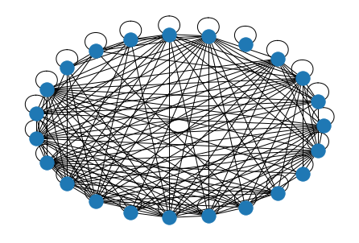

UTS SOAL NOMER 2 Meringkas Berita
Contents
UTS SOAL NOMER 2 Meringkas Berita#
install trafilatura
pip install trafilatura
Looking in indexes: https://pypi.org/simple, https://us-python.pkg.dev/colab-wheels/public/simple/
Collecting trafilatura
Downloading trafilatura-1.4.0-py3-none-any.whl (1.0 MB)
?25l
|▎ | 10 kB 23.1 MB/s eta 0:00:01
|▋ | 20 kB 9.8 MB/s eta 0:00:01
|█ | 30 kB 13.6 MB/s eta 0:00:01
|█▎ | 40 kB 6.5 MB/s eta 0:00:01
|█▋ | 51 kB 6.0 MB/s eta 0:00:01
|██ | 61 kB 7.1 MB/s eta 0:00:01
|██▎ | 71 kB 7.8 MB/s eta 0:00:01
|██▌ | 81 kB 8.7 MB/s eta 0:00:01
|██▉ | 92 kB 8.3 MB/s eta 0:00:01
|███▏ | 102 kB 7.6 MB/s eta 0:00:01
|███▌ | 112 kB 7.6 MB/s eta 0:00:01
|███▉ | 122 kB 7.6 MB/s eta 0:00:01
|████▏ | 133 kB 7.6 MB/s eta 0:00:01
|████▌ | 143 kB 7.6 MB/s eta 0:00:01
|████▉ | 153 kB 7.6 MB/s eta 0:00:01
|█████ | 163 kB 7.6 MB/s eta 0:00:01
|█████▍ | 174 kB 7.6 MB/s eta 0:00:01
|█████▊ | 184 kB 7.6 MB/s eta 0:00:01
|██████ | 194 kB 7.6 MB/s eta 0:00:01
|██████▍ | 204 kB 7.6 MB/s eta 0:00:01
|██████▊ | 215 kB 7.6 MB/s eta 0:00:01
|███████ | 225 kB 7.6 MB/s eta 0:00:01
|███████▍ | 235 kB 7.6 MB/s eta 0:00:01
|███████▋ | 245 kB 7.6 MB/s eta 0:00:01
|████████ | 256 kB 7.6 MB/s eta 0:00:01
|████████▎ | 266 kB 7.6 MB/s eta 0:00:01
|████████▋ | 276 kB 7.6 MB/s eta 0:00:01
|█████████ | 286 kB 7.6 MB/s eta 0:00:01
|█████████▎ | 296 kB 7.6 MB/s eta 0:00:01
|█████████▋ | 307 kB 7.6 MB/s eta 0:00:01
|█████████▉ | 317 kB 7.6 MB/s eta 0:00:01
|██████████▏ | 327 kB 7.6 MB/s eta 0:00:01
|██████████▌ | 337 kB 7.6 MB/s eta 0:00:01
|██████████▉ | 348 kB 7.6 MB/s eta 0:00:01
|███████████▏ | 358 kB 7.6 MB/s eta 0:00:01
|███████████▌ | 368 kB 7.6 MB/s eta 0:00:01
|███████████▉ | 378 kB 7.6 MB/s eta 0:00:01
|████████████▏ | 389 kB 7.6 MB/s eta 0:00:01
|████████████▍ | 399 kB 7.6 MB/s eta 0:00:01
|████████████▊ | 409 kB 7.6 MB/s eta 0:00:01
|█████████████ | 419 kB 7.6 MB/s eta 0:00:01
|█████████████▍ | 430 kB 7.6 MB/s eta 0:00:01
|█████████████▊ | 440 kB 7.6 MB/s eta 0:00:01
|██████████████ | 450 kB 7.6 MB/s eta 0:00:01
|██████████████▍ | 460 kB 7.6 MB/s eta 0:00:01
|██████████████▊ | 471 kB 7.6 MB/s eta 0:00:01
|███████████████ | 481 kB 7.6 MB/s eta 0:00:01
|███████████████▎ | 491 kB 7.6 MB/s eta 0:00:01
|███████████████▋ | 501 kB 7.6 MB/s eta 0:00:01
|████████████████ | 512 kB 7.6 MB/s eta 0:00:01
|████████████████▎ | 522 kB 7.6 MB/s eta 0:00:01
|████████████████▋ | 532 kB 7.6 MB/s eta 0:00:01
|█████████████████ | 542 kB 7.6 MB/s eta 0:00:01
|█████████████████▏ | 552 kB 7.6 MB/s eta 0:00:01
|█████████████████▌ | 563 kB 7.6 MB/s eta 0:00:01
|█████████████████▉ | 573 kB 7.6 MB/s eta 0:00:01
|██████████████████▏ | 583 kB 7.6 MB/s eta 0:00:01
|██████████████████▌ | 593 kB 7.6 MB/s eta 0:00:01
|██████████████████▉ | 604 kB 7.6 MB/s eta 0:00:01
|███████████████████▏ | 614 kB 7.6 MB/s eta 0:00:01
|███████████████████▌ | 624 kB 7.6 MB/s eta 0:00:01
|███████████████████▊ | 634 kB 7.6 MB/s eta 0:00:01
|████████████████████ | 645 kB 7.6 MB/s eta 0:00:01
|████████████████████▍ | 655 kB 7.6 MB/s eta 0:00:01
|████████████████████▊ | 665 kB 7.6 MB/s eta 0:00:01
|█████████████████████ | 675 kB 7.6 MB/s eta 0:00:01
|█████████████████████▍ | 686 kB 7.6 MB/s eta 0:00:01
|█████████████████████▊ | 696 kB 7.6 MB/s eta 0:00:01
|██████████████████████ | 706 kB 7.6 MB/s eta 0:00:01
|██████████████████████▎ | 716 kB 7.6 MB/s eta 0:00:01
|██████████████████████▋ | 727 kB 7.6 MB/s eta 0:00:01
|███████████████████████ | 737 kB 7.6 MB/s eta 0:00:01
|███████████████████████▎ | 747 kB 7.6 MB/s eta 0:00:01
|███████████████████████▋ | 757 kB 7.6 MB/s eta 0:00:01
|████████████████████████ | 768 kB 7.6 MB/s eta 0:00:01
|████████████████████████▎ | 778 kB 7.6 MB/s eta 0:00:01
|████████████████████████▋ | 788 kB 7.6 MB/s eta 0:00:01
|████████████████████████▉ | 798 kB 7.6 MB/s eta 0:00:01
|█████████████████████████▏ | 808 kB 7.6 MB/s eta 0:00:01
|█████████████████████████▌ | 819 kB 7.6 MB/s eta 0:00:01
|█████████████████████████▉ | 829 kB 7.6 MB/s eta 0:00:01
|██████████████████████████▏ | 839 kB 7.6 MB/s eta 0:00:01
|██████████████████████████▌ | 849 kB 7.6 MB/s eta 0:00:01
|██████████████████████████▉ | 860 kB 7.6 MB/s eta 0:00:01
|███████████████████████████ | 870 kB 7.6 MB/s eta 0:00:01
|███████████████████████████▍ | 880 kB 7.6 MB/s eta 0:00:01
|███████████████████████████▊ | 890 kB 7.6 MB/s eta 0:00:01
|████████████████████████████ | 901 kB 7.6 MB/s eta 0:00:01
|████████████████████████████▍ | 911 kB 7.6 MB/s eta 0:00:01
|████████████████████████████▊ | 921 kB 7.6 MB/s eta 0:00:01
|█████████████████████████████ | 931 kB 7.6 MB/s eta 0:00:01
|█████████████████████████████▍ | 942 kB 7.6 MB/s eta 0:00:01
|█████████████████████████████▋ | 952 kB 7.6 MB/s eta 0:00:01
|██████████████████████████████ | 962 kB 7.6 MB/s eta 0:00:01
|██████████████████████████████▎ | 972 kB 7.6 MB/s eta 0:00:01
|██████████████████████████████▋ | 983 kB 7.6 MB/s eta 0:00:01
|███████████████████████████████ | 993 kB 7.6 MB/s eta 0:00:01
|███████████████████████████████▎| 1.0 MB 7.6 MB/s eta 0:00:01
|███████████████████████████████▋| 1.0 MB 7.6 MB/s eta 0:00:01
|████████████████████████████████| 1.0 MB 7.6 MB/s eta 0:00:01
|████████████████████████████████| 1.0 MB 7.6 MB/s
?25hCollecting urllib3<2,>=1.26
Downloading urllib3-1.26.12-py2.py3-none-any.whl (140 kB)
?25l
|██▍ | 10 kB 26.5 MB/s eta 0:00:01
|████▊ | 20 kB 35.2 MB/s eta 0:00:01
|███████ | 30 kB 42.9 MB/s eta 0:00:01
|█████████▍ | 40 kB 46.8 MB/s eta 0:00:01
|███████████▊ | 51 kB 49.6 MB/s eta 0:00:01
|██████████████ | 61 kB 53.2 MB/s eta 0:00:01
|████████████████▍ | 71 kB 53.4 MB/s eta 0:00:01
|██████████████████▊ | 81 kB 53.7 MB/s eta 0:00:01
|█████████████████████ | 92 kB 56.0 MB/s eta 0:00:01
|███████████████████████▍ | 102 kB 57.9 MB/s eta 0:00:01
|█████████████████████████▊ | 112 kB 57.9 MB/s eta 0:00:01
|████████████████████████████ | 122 kB 57.9 MB/s eta 0:00:01
|██████████████████████████████▍ | 133 kB 57.9 MB/s eta 0:00:01
|████████████████████████████████| 140 kB 57.9 MB/s
?25hCollecting courlan>=0.8.3
Downloading courlan-0.8.3-py3-none-any.whl (34 kB)
Collecting justext>=3.0.0
Downloading jusText-3.0.0-py2.py3-none-any.whl (837 kB)
?25l
|▍ | 10 kB 23.3 MB/s eta 0:00:01
|▉ | 20 kB 29.5 MB/s eta 0:00:01
|█▏ | 30 kB 37.3 MB/s eta 0:00:01
|█▋ | 40 kB 40.5 MB/s eta 0:00:01
|██ | 51 kB 42.4 MB/s eta 0:00:01
|██▍ | 61 kB 46.2 MB/s eta 0:00:01
|██▊ | 71 kB 48.3 MB/s eta 0:00:01
|███▏ | 81 kB 50.8 MB/s eta 0:00:01
|███▌ | 92 kB 54.4 MB/s eta 0:00:01
|████ | 102 kB 57.6 MB/s eta 0:00:01
|████▎ | 112 kB 57.6 MB/s eta 0:00:01
|████▊ | 122 kB 57.6 MB/s eta 0:00:01
|█████ | 133 kB 57.6 MB/s eta 0:00:01
|█████▌ | 143 kB 57.6 MB/s eta 0:00:01
|█████▉ | 153 kB 57.6 MB/s eta 0:00:01
|██████▎ | 163 kB 57.6 MB/s eta 0:00:01
|██████▋ | 174 kB 57.6 MB/s eta 0:00:01
|███████ | 184 kB 57.6 MB/s eta 0:00:01
|███████▍ | 194 kB 57.6 MB/s eta 0:00:01
|███████▉ | 204 kB 57.6 MB/s eta 0:00:01
|████████▏ | 215 kB 57.6 MB/s eta 0:00:01
|████████▋ | 225 kB 57.6 MB/s eta 0:00:01
|█████████ | 235 kB 57.6 MB/s eta 0:00:01
|█████████▍ | 245 kB 57.6 MB/s eta 0:00:01
|█████████▉ | 256 kB 57.6 MB/s eta 0:00:01
|██████████▏ | 266 kB 57.6 MB/s eta 0:00:01
|██████████▋ | 276 kB 57.6 MB/s eta 0:00:01
|███████████ | 286 kB 57.6 MB/s eta 0:00:01
|███████████▍ | 296 kB 57.6 MB/s eta 0:00:01
|███████████▊ | 307 kB 57.6 MB/s eta 0:00:01
|████████████▏ | 317 kB 57.6 MB/s eta 0:00:01
|████████████▌ | 327 kB 57.6 MB/s eta 0:00:01
|█████████████ | 337 kB 57.6 MB/s eta 0:00:01
|█████████████▎ | 348 kB 57.6 MB/s eta 0:00:01
|█████████████▊ | 358 kB 57.6 MB/s eta 0:00:01
|██████████████ | 368 kB 57.6 MB/s eta 0:00:01
|██████████████▌ | 378 kB 57.6 MB/s eta 0:00:01
|██████████████▉ | 389 kB 57.6 MB/s eta 0:00:01
|███████████████▎ | 399 kB 57.6 MB/s eta 0:00:01
|███████████████▋ | 409 kB 57.6 MB/s eta 0:00:01
|████████████████ | 419 kB 57.6 MB/s eta 0:00:01
|████████████████▍ | 430 kB 57.6 MB/s eta 0:00:01
|████████████████▉ | 440 kB 57.6 MB/s eta 0:00:01
|█████████████████▏ | 450 kB 57.6 MB/s eta 0:00:01
|█████████████████▋ | 460 kB 57.6 MB/s eta 0:00:01
|██████████████████ | 471 kB 57.6 MB/s eta 0:00:01
|██████████████████▍ | 481 kB 57.6 MB/s eta 0:00:01
|██████████████████▊ | 491 kB 57.6 MB/s eta 0:00:01
|███████████████████▏ | 501 kB 57.6 MB/s eta 0:00:01
|███████████████████▋ | 512 kB 57.6 MB/s eta 0:00:01
|████████████████████ | 522 kB 57.6 MB/s eta 0:00:01
|████████████████████▍ | 532 kB 57.6 MB/s eta 0:00:01
|████████████████████▊ | 542 kB 57.6 MB/s eta 0:00:01
|█████████████████████▏ | 552 kB 57.6 MB/s eta 0:00:01
|█████████████████████▌ | 563 kB 57.6 MB/s eta 0:00:01
|██████████████████████ | 573 kB 57.6 MB/s eta 0:00:01
|██████████████████████▎ | 583 kB 57.6 MB/s eta 0:00:01
|██████████████████████▊ | 593 kB 57.6 MB/s eta 0:00:01
|███████████████████████ | 604 kB 57.6 MB/s eta 0:00:01
|███████████████████████▌ | 614 kB 57.6 MB/s eta 0:00:01
|███████████████████████▉ | 624 kB 57.6 MB/s eta 0:00:01
|████████████████████████▎ | 634 kB 57.6 MB/s eta 0:00:01
|████████████████████████▋ | 645 kB 57.6 MB/s eta 0:00:01
|█████████████████████████ | 655 kB 57.6 MB/s eta 0:00:01
|█████████████████████████▍ | 665 kB 57.6 MB/s eta 0:00:01
|█████████████████████████▉ | 675 kB 57.6 MB/s eta 0:00:01
|██████████████████████████▏ | 686 kB 57.6 MB/s eta 0:00:01
|██████████████████████████▋ | 696 kB 57.6 MB/s eta 0:00:01
|███████████████████████████ | 706 kB 57.6 MB/s eta 0:00:01
|███████████████████████████▍ | 716 kB 57.6 MB/s eta 0:00:01
|███████████████████████████▊ | 727 kB 57.6 MB/s eta 0:00:01
|████████████████████████████▏ | 737 kB 57.6 MB/s eta 0:00:01
|████████████████████████████▌ | 747 kB 57.6 MB/s eta 0:00:01
|█████████████████████████████ | 757 kB 57.6 MB/s eta 0:00:01
|█████████████████████████████▍ | 768 kB 57.6 MB/s eta 0:00:01
|█████████████████████████████▊ | 778 kB 57.6 MB/s eta 0:00:01
|██████████████████████████████▏ | 788 kB 57.6 MB/s eta 0:00:01
|██████████████████████████████▌ | 798 kB 57.6 MB/s eta 0:00:01
|███████████████████████████████ | 808 kB 57.6 MB/s eta 0:00:01
|███████████████████████████████▎| 819 kB 57.6 MB/s eta 0:00:01
|███████████████████████████████▊| 829 kB 57.6 MB/s eta 0:00:01
|████████████████████████████████| 837 kB 57.6 MB/s
?25hCollecting htmldate>=1.3.2
Downloading htmldate-1.3.2-py3-none-any.whl (39 kB)
Requirement already satisfied: certifi in /usr/local/lib/python3.7/dist-packages (from trafilatura) (2022.9.24)
Requirement already satisfied: lxml>=4.6.4 in /usr/local/lib/python3.7/dist-packages (from trafilatura) (4.9.1)
Requirement already satisfied: charset-normalizer>=2.1.1 in /usr/local/lib/python3.7/dist-packages (from trafilatura) (2.1.1)
Requirement already satisfied: langcodes>=3.3.0 in /usr/local/lib/python3.7/dist-packages (from courlan>=0.8.3->trafilatura) (3.3.0)
Collecting tld>=0.12.6
Downloading tld-0.12.6-py37-none-any.whl (412 kB)
?25l
|▉ | 10 kB 24.2 MB/s eta 0:00:01
|█▋ | 20 kB 28.0 MB/s eta 0:00:01
|██▍ | 30 kB 33.1 MB/s eta 0:00:01
|███▏ | 40 kB 36.9 MB/s eta 0:00:01
|████ | 51 kB 38.0 MB/s eta 0:00:01
|████▊ | 61 kB 41.8 MB/s eta 0:00:01
|█████▋ | 71 kB 44.6 MB/s eta 0:00:01
|██████▍ | 81 kB 45.9 MB/s eta 0:00:01
|███████▏ | 92 kB 48.1 MB/s eta 0:00:01
|████████ | 102 kB 49.9 MB/s eta 0:00:01
|████████▊ | 112 kB 49.9 MB/s eta 0:00:01
|█████████▌ | 122 kB 49.9 MB/s eta 0:00:01
|██████████▍ | 133 kB 49.9 MB/s eta 0:00:01
|███████████▏ | 143 kB 49.9 MB/s eta 0:00:01
|████████████ | 153 kB 49.9 MB/s eta 0:00:01
|████████████▊ | 163 kB 49.9 MB/s eta 0:00:01
|█████████████▌ | 174 kB 49.9 MB/s eta 0:00:01
|██████████████▎ | 184 kB 49.9 MB/s eta 0:00:01
|███████████████ | 194 kB 49.9 MB/s eta 0:00:01
|████████████████ | 204 kB 49.9 MB/s eta 0:00:01
|████████████████▊ | 215 kB 49.9 MB/s eta 0:00:01
|█████████████████▌ | 225 kB 49.9 MB/s eta 0:00:01
|██████████████████▎ | 235 kB 49.9 MB/s eta 0:00:01
|███████████████████ | 245 kB 49.9 MB/s eta 0:00:01
|███████████████████▉ | 256 kB 49.9 MB/s eta 0:00:01
|████████████████████▊ | 266 kB 49.9 MB/s eta 0:00:01
|█████████████████████▌ | 276 kB 49.9 MB/s eta 0:00:01
|██████████████████████▎ | 286 kB 49.9 MB/s eta 0:00:01
|███████████████████████ | 296 kB 49.9 MB/s eta 0:00:01
|███████████████████████▉ | 307 kB 49.9 MB/s eta 0:00:01
|████████████████████████▋ | 317 kB 49.9 MB/s eta 0:00:01
|█████████████████████████▍ | 327 kB 49.9 MB/s eta 0:00:01
|██████████████████████████▎ | 337 kB 49.9 MB/s eta 0:00:01
|███████████████████████████ | 348 kB 49.9 MB/s eta 0:00:01
|███████████████████████████▉ | 358 kB 49.9 MB/s eta 0:00:01
|████████████████████████████▋ | 368 kB 49.9 MB/s eta 0:00:01
|█████████████████████████████▍ | 378 kB 49.9 MB/s eta 0:00:01
|██████████████████████████████▏ | 389 kB 49.9 MB/s eta 0:00:01
|███████████████████████████████ | 399 kB 49.9 MB/s eta 0:00:01
|███████████████████████████████▉| 409 kB 49.9 MB/s eta 0:00:01
|████████████████████████████████| 412 kB 49.9 MB/s
?25hCollecting dateparser>=1.1.1
Downloading dateparser-1.1.2-py2.py3-none-any.whl (290 kB)
?25l
|█▏ | 10 kB 28.0 MB/s eta 0:00:01
|██▎ | 20 kB 34.5 MB/s eta 0:00:01
|███▍ | 30 kB 41.7 MB/s eta 0:00:01
|████▌ | 40 kB 47.0 MB/s eta 0:00:01
|█████▋ | 51 kB 50.1 MB/s eta 0:00:01
|██████▊ | 61 kB 54.2 MB/s eta 0:00:01
|████████ | 71 kB 56.5 MB/s eta 0:00:01
|█████████ | 81 kB 59.0 MB/s eta 0:00:01
|██████████▏ | 92 kB 60.3 MB/s eta 0:00:01
|███████████▎ | 102 kB 61.8 MB/s eta 0:00:01
|████████████▍ | 112 kB 61.8 MB/s eta 0:00:01
|█████████████▌ | 122 kB 61.8 MB/s eta 0:00:01
|██████████████▋ | 133 kB 61.8 MB/s eta 0:00:01
|███████████████▉ | 143 kB 61.8 MB/s eta 0:00:01
|█████████████████ | 153 kB 61.8 MB/s eta 0:00:01
|██████████████████ | 163 kB 61.8 MB/s eta 0:00:01
|███████████████████▏ | 174 kB 61.8 MB/s eta 0:00:01
|████████████████████▎ | 184 kB 61.8 MB/s eta 0:00:01
|█████████████████████▍ | 194 kB 61.8 MB/s eta 0:00:01
|██████████████████████▋ | 204 kB 61.8 MB/s eta 0:00:01
|███████████████████████▊ | 215 kB 61.8 MB/s eta 0:00:01
|████████████████████████▉ | 225 kB 61.8 MB/s eta 0:00:01
|██████████████████████████ | 235 kB 61.8 MB/s eta 0:00:01
|███████████████████████████ | 245 kB 61.8 MB/s eta 0:00:01
|████████████████████████████▏ | 256 kB 61.8 MB/s eta 0:00:01
|█████████████████████████████▎ | 266 kB 61.8 MB/s eta 0:00:01
|██████████████████████████████▌ | 276 kB 61.8 MB/s eta 0:00:01
|███████████████████████████████▋| 286 kB 61.8 MB/s eta 0:00:01
|████████████████████████████████| 290 kB 61.8 MB/s
?25hRequirement already satisfied: python-dateutil>=2.8.2 in /usr/local/lib/python3.7/dist-packages (from htmldate>=1.3.2->trafilatura) (2.8.2)
Requirement already satisfied: pytz in /usr/local/lib/python3.7/dist-packages (from dateparser>=1.1.1->htmldate>=1.3.2->trafilatura) (2022.5)
Requirement already satisfied: tzlocal in /usr/local/lib/python3.7/dist-packages (from dateparser>=1.1.1->htmldate>=1.3.2->trafilatura) (1.5.1)
Collecting regex!=2019.02.19,!=2021.8.27,<2022.3.15
Downloading regex-2022.3.2-cp37-cp37m-manylinux_2_17_x86_64.manylinux2014_x86_64.whl (749 kB)
?25l
|▍ | 10 kB 27.8 MB/s eta 0:00:01
|▉ | 20 kB 36.0 MB/s eta 0:00:01
|█▎ | 30 kB 44.2 MB/s eta 0:00:01
|█▊ | 40 kB 49.8 MB/s eta 0:00:01
|██▏ | 51 kB 51.4 MB/s eta 0:00:01
|██▋ | 61 kB 54.9 MB/s eta 0:00:01
|███ | 71 kB 56.4 MB/s eta 0:00:01
|███▌ | 81 kB 57.6 MB/s eta 0:00:01
|████ | 92 kB 60.0 MB/s eta 0:00:01
|████▍ | 102 kB 61.8 MB/s eta 0:00:01
|████▉ | 112 kB 61.8 MB/s eta 0:00:01
|█████▎ | 122 kB 61.8 MB/s eta 0:00:01
|█████▊ | 133 kB 61.8 MB/s eta 0:00:01
|██████▏ | 143 kB 61.8 MB/s eta 0:00:01
|██████▋ | 153 kB 61.8 MB/s eta 0:00:01
|███████ | 163 kB 61.8 MB/s eta 0:00:01
|███████▍ | 174 kB 61.8 MB/s eta 0:00:01
|███████▉ | 184 kB 61.8 MB/s eta 0:00:01
|████████▎ | 194 kB 61.8 MB/s eta 0:00:01
|████████▊ | 204 kB 61.8 MB/s eta 0:00:01
|█████████▏ | 215 kB 61.8 MB/s eta 0:00:01
|█████████▋ | 225 kB 61.8 MB/s eta 0:00:01
|██████████ | 235 kB 61.8 MB/s eta 0:00:01
|██████████▌ | 245 kB 61.8 MB/s eta 0:00:01
|███████████ | 256 kB 61.8 MB/s eta 0:00:01
|███████████▍ | 266 kB 61.8 MB/s eta 0:00:01
|███████████▉ | 276 kB 61.8 MB/s eta 0:00:01
|████████████▎ | 286 kB 61.8 MB/s eta 0:00:01
|████████████▊ | 296 kB 61.8 MB/s eta 0:00:01
|█████████████▏ | 307 kB 61.8 MB/s eta 0:00:01
|█████████████▋ | 317 kB 61.8 MB/s eta 0:00:01
|██████████████ | 327 kB 61.8 MB/s eta 0:00:01
|██████████████▍ | 337 kB 61.8 MB/s eta 0:00:01
|██████████████▉ | 348 kB 61.8 MB/s eta 0:00:01
|███████████████▎ | 358 kB 61.8 MB/s eta 0:00:01
|███████████████▊ | 368 kB 61.8 MB/s eta 0:00:01
|████████████████▏ | 378 kB 61.8 MB/s eta 0:00:01
|████████████████▋ | 389 kB 61.8 MB/s eta 0:00:01
|█████████████████ | 399 kB 61.8 MB/s eta 0:00:01
|█████████████████▌ | 409 kB 61.8 MB/s eta 0:00:01
|██████████████████ | 419 kB 61.8 MB/s eta 0:00:01
|██████████████████▍ | 430 kB 61.8 MB/s eta 0:00:01
|██████████████████▉ | 440 kB 61.8 MB/s eta 0:00:01
|███████████████████▎ | 450 kB 61.8 MB/s eta 0:00:01
|███████████████████▊ | 460 kB 61.8 MB/s eta 0:00:01
|████████████████████▏ | 471 kB 61.8 MB/s eta 0:00:01
|████████████████████▌ | 481 kB 61.8 MB/s eta 0:00:01
|█████████████████████ | 491 kB 61.8 MB/s eta 0:00:01
|█████████████████████▍ | 501 kB 61.8 MB/s eta 0:00:01
|█████████████████████▉ | 512 kB 61.8 MB/s eta 0:00:01
|██████████████████████▎ | 522 kB 61.8 MB/s eta 0:00:01
|██████████████████████▊ | 532 kB 61.8 MB/s eta 0:00:01
|███████████████████████▏ | 542 kB 61.8 MB/s eta 0:00:01
|███████████████████████▋ | 552 kB 61.8 MB/s eta 0:00:01
|████████████████████████ | 563 kB 61.8 MB/s eta 0:00:01
|████████████████████████▌ | 573 kB 61.8 MB/s eta 0:00:01
|█████████████████████████ | 583 kB 61.8 MB/s eta 0:00:01
|█████████████████████████▍ | 593 kB 61.8 MB/s eta 0:00:01
|█████████████████████████▉ | 604 kB 61.8 MB/s eta 0:00:01
|██████████████████████████▎ | 614 kB 61.8 MB/s eta 0:00:01
|██████████████████████████▊ | 624 kB 61.8 MB/s eta 0:00:01
|███████████████████████████▏ | 634 kB 61.8 MB/s eta 0:00:01
|███████████████████████████▌ | 645 kB 61.8 MB/s eta 0:00:01
|████████████████████████████ | 655 kB 61.8 MB/s eta 0:00:01
|████████████████████████████▍ | 665 kB 61.8 MB/s eta 0:00:01
|████████████████████████████▉ | 675 kB 61.8 MB/s eta 0:00:01
|█████████████████████████████▎ | 686 kB 61.8 MB/s eta 0:00:01
|█████████████████████████████▊ | 696 kB 61.8 MB/s eta 0:00:01
|██████████████████████████████▏ | 706 kB 61.8 MB/s eta 0:00:01
|██████████████████████████████▋ | 716 kB 61.8 MB/s eta 0:00:01
|███████████████████████████████ | 727 kB 61.8 MB/s eta 0:00:01
|███████████████████████████████▌| 737 kB 61.8 MB/s eta 0:00:01
|████████████████████████████████| 747 kB 61.8 MB/s eta 0:00:01
|████████████████████████████████| 749 kB 61.8 MB/s
?25hRequirement already satisfied: six>=1.5 in /usr/local/lib/python3.7/dist-packages (from python-dateutil>=2.8.2->htmldate>=1.3.2->trafilatura) (1.15.0)
Installing collected packages: regex, urllib3, tld, dateparser, justext, htmldate, courlan, trafilatura
Attempting uninstall: regex
Found existing installation: regex 2022.6.2
Uninstalling regex-2022.6.2:
Successfully uninstalled regex-2022.6.2
Attempting uninstall: urllib3
Found existing installation: urllib3 1.24.3
Uninstalling urllib3-1.24.3:
Successfully uninstalled urllib3-1.24.3
ERROR: pip's dependency resolver does not currently take into account all the packages that are installed. This behaviour is the source of the following dependency conflicts.
requests 2.23.0 requires urllib3!=1.25.0,!=1.25.1,<1.26,>=1.21.1, but you have urllib3 1.26.12 which is incompatible.
google-colab 1.0.0 requires tornado~=5.1.0, but you have tornado 6.2 which is incompatible.
Successfully installed courlan-0.8.3 dateparser-1.1.2 htmldate-1.3.2 justext-3.0.0 regex-2022.3.2 tld-0.12.6 trafilatura-1.4.0 urllib3-1.26.12
import trafilatura
Masukkan Url Berita yang Akan dicrawling#
downloaded = trafilatura.fetch_url('https://bola.tempo.co/read/1643935/alami-cedera-luis-diaz-tak-perkuat-liverpool-hingga-piala-dunia-2022')
Lakukan Crawling dan Tampilkan Hasilnya#
if downloaded is not None:
result = trafilatura.extract(downloaded)
print(result)
TEMPO.CO, Jakarta - Liverpool mendapat pukulan keras usai kalah dari Arsenal dalam laga lanjutan Liga Inggris, Ahad kemarin. The Reds harus kehilangan pemain sayap, Luis Diaz, karena mengalami cedera.
Pemain asal Kolombia yang musim ini punya peran penting di skuad Jurgen Klopp harus meninggalkan lapangan dengan menggunakan penyangga. Dalam laga melawan Arsenal, Diaz harus meninggalkan lapangan setelah duel dengan Thomas Partey. Ia kemudian digantikan oleh Roberto Firmino.
Menurut laporan Liverpool, Luis Diaz tidak akan kembali dari cedera sampai setelah Piala Dunia 2022. Selain Luiz Diaz, ada juga Trent Alexander-Arnold yang juga berpeluang absen karena cedera engkel di laga yang sama.
"Cedera Trent juga buruk, di engkelnya. Engkelnya terkilir dan itu tidak bagus. Trent tidak pernah diganti selama tujuh tahun ini jika dia memang bisa lanjut. Dia kesakitan dan engkelnya mulai bengkak. Jadi kami harus lihat dulu," kata manajer Liverpool Jurgen Klopp di The Athletic.
Luis Diaz bisa dibilang sebagai pemain terbaik Liverpool setelah klub ditinggalkan Sadio Mane. Pemain berusia 25 tahun itu mencatatkan tiga gol dan dua assist dalam delapan pertandingan pertamanya di Liga Inggris.
Baca : Alasan Jurgen Klopp Tarik Keluar Mohamed Salah saat Arsenal vs Liverpool 3-2 di Liga Inggris
Kini pekerjaan rumah Liverpool menjadi semakin berat setelah kehilangan Luiz Dias. Pasalnya, mereka akan menghadapi laga krusial melawan Manchester City dan Tottenham Hotspur di Liga Inggris. Sedangkan di Liga Champions, Liverpool akan menghadapi Rangers, Ajax dan Napoli di sisa laga fase grup.
Kekalahan dari Arsenal membuat the Reds merana. Mohamed Salah dan kawan-kawan berselisih 14 poin di belakang Arsenal di klasemen Liga Inggris. Liverpool berada di peringkat 10 dengan 10 poin setelah melakoni delapan pertandingan. Ini merupakan awal terburuk Liverpool selama tujuh tahun kepemimpinan Klopp.
Manchester City, yang berada di posisi kedua, akan bertandang ke Anfield pada pekan depan. Klopp hanya punya sedikit waktu untuk memperbaiki penampilan para pemainnya. “Kami belum harus melihat klasemen tetapi kami tahu di mana kami berada tanpa harus melihatnya, jadi kami belum selesai,” kata Klopp dikutip dari Skysports.
TAHPAH PRE-PROSESING DATA#
Pada tahap ini akan dilakukan pengolahan data mentah menjadi data siap pakai, antara lain yang akan dilakukan adalah:
Tahap Case Folfding dll
result = result.lower()
result
'tempo.co, jakarta - liverpool mendapat pukulan keras usai kalah dari arsenal dalam laga lanjutan liga inggris, ahad kemarin. the reds harus kehilangan pemain sayap, luis diaz, karena mengalami cedera.\npemain asal kolombia yang musim ini punya peran penting di skuad jurgen klopp harus meninggalkan lapangan dengan menggunakan penyangga. dalam laga melawan arsenal, diaz harus meninggalkan lapangan setelah duel dengan thomas partey. ia kemudian digantikan oleh roberto firmino.\nmenurut laporan liverpool, luis diaz tidak akan kembali dari cedera sampai setelah piala dunia 2022. selain luiz diaz, ada juga trent alexander-arnold yang juga berpeluang absen karena cedera engkel di laga yang sama.\n"cedera trent juga buruk, di engkelnya. engkelnya terkilir dan itu tidak bagus. trent tidak pernah diganti selama tujuh tahun ini jika dia memang bisa lanjut. dia kesakitan dan engkelnya mulai bengkak. jadi kami harus lihat dulu," kata manajer liverpool jurgen klopp di the athletic.\nluis diaz bisa dibilang sebagai pemain terbaik liverpool setelah klub ditinggalkan sadio mane. pemain berusia 25 tahun itu mencatatkan tiga gol dan dua assist dalam delapan pertandingan pertamanya di liga inggris.\nbaca : alasan jurgen klopp tarik keluar mohamed salah saat arsenal vs liverpool 3-2 di liga inggris\nkini pekerjaan rumah liverpool menjadi semakin berat setelah kehilangan luiz dias. pasalnya, mereka akan menghadapi laga krusial melawan manchester city dan tottenham hotspur di liga inggris. sedangkan di liga champions, liverpool akan menghadapi rangers, ajax dan napoli di sisa laga fase grup.\nkekalahan dari arsenal membuat the reds merana. mohamed salah dan kawan-kawan berselisih 14 poin di belakang arsenal di klasemen liga inggris. liverpool berada di peringkat 10 dengan 10 poin setelah melakoni delapan pertandingan. ini merupakan awal terburuk liverpool selama tujuh tahun kepemimpinan klopp.\nmanchester city, yang berada di posisi kedua, akan bertandang ke anfield pada pekan depan. klopp hanya punya sedikit waktu untuk memperbaiki penampilan para pemainnya. “kami belum harus melihat klasemen tetapi kami tahu di mana kami berada tanpa harus melihatnya, jadi kami belum selesai,” kata klopp dikutip dari skysports.'
df = result
data = {"Berita_Asli": [df] }
data
{'Berita_Asli': ['tempo.co, jakarta - liverpool mendapat pukulan keras usai kalah dari arsenal dalam laga lanjutan liga inggris, ahad kemarin. the reds harus kehilangan pemain sayap, luis diaz, karena mengalami cedera.\npemain asal kolombia yang musim ini punya peran penting di skuad jurgen klopp harus meninggalkan lapangan dengan menggunakan penyangga. dalam laga melawan arsenal, diaz harus meninggalkan lapangan setelah duel dengan thomas partey. ia kemudian digantikan oleh roberto firmino.\nmenurut laporan liverpool, luis diaz tidak akan kembali dari cedera sampai setelah piala dunia 2022. selain luiz diaz, ada juga trent alexander-arnold yang juga berpeluang absen karena cedera engkel di laga yang sama.\n"cedera trent juga buruk, di engkelnya. engkelnya terkilir dan itu tidak bagus. trent tidak pernah diganti selama tujuh tahun ini jika dia memang bisa lanjut. dia kesakitan dan engkelnya mulai bengkak. jadi kami harus lihat dulu," kata manajer liverpool jurgen klopp di the athletic.\nluis diaz bisa dibilang sebagai pemain terbaik liverpool setelah klub ditinggalkan sadio mane. pemain berusia 25 tahun itu mencatatkan tiga gol dan dua assist dalam delapan pertandingan pertamanya di liga inggris.\nbaca : alasan jurgen klopp tarik keluar mohamed salah saat arsenal vs liverpool 3-2 di liga inggris\nkini pekerjaan rumah liverpool menjadi semakin berat setelah kehilangan luiz dias. pasalnya, mereka akan menghadapi laga krusial melawan manchester city dan tottenham hotspur di liga inggris. sedangkan di liga champions, liverpool akan menghadapi rangers, ajax dan napoli di sisa laga fase grup.\nkekalahan dari arsenal membuat the reds merana. mohamed salah dan kawan-kawan berselisih 14 poin di belakang arsenal di klasemen liga inggris. liverpool berada di peringkat 10 dengan 10 poin setelah melakoni delapan pertandingan. ini merupakan awal terburuk liverpool selama tujuh tahun kepemimpinan klopp.\nmanchester city, yang berada di posisi kedua, akan bertandang ke anfield pada pekan depan. klopp hanya punya sedikit waktu untuk memperbaiki penampilan para pemainnya. “kami belum harus melihat klasemen tetapi kami tahu di mana kami berada tanpa harus melihatnya, jadi kami belum selesai,” kata klopp dikutip dari skysports.']}
Masukkan hasil crwaling data pada tabel pandas#
import pandas as pd
berita = pd.DataFrame(data)
berita
| Berita_Asli | |
|---|---|
| 0 | tempo.co, jakarta - liverpool mendapat pukulan... |
Proses Spliting kalimat dari paragraf berita#
import nltk
nltk.download('punkt')
from nltk.tokenize import sent_tokenize
df_pisahkalimat = data.copy()
df_pisahkalimat[0] = sent_tokenize(df_pisahkalimat["Berita_Asli"][0])
df_pisahkalimat = pd.DataFrame(df_pisahkalimat[0], columns=["Berita_Asli"])
df_pisahkalimat
[nltk_data] Downloading package punkt to /root/nltk_data...
[nltk_data] Unzipping tokenizers/punkt.zip.
| Berita_Asli | |
|---|---|
| 0 | tempo.co, jakarta - liverpool mendapat pukulan... |
| 1 | the reds harus kehilangan pemain sayap, luis d... |
| 2 | pemain asal kolombia yang musim ini punya pera... |
| 3 | dalam laga melawan arsenal, diaz harus meningg... |
| 4 | ia kemudian digantikan oleh roberto firmino. |
| 5 | menurut laporan liverpool, luis diaz tidak aka... |
| 6 | "cedera trent juga buruk, di engkelnya. |
| 7 | engkelnya terkilir dan itu tidak bagus. |
| 8 | trent tidak pernah diganti selama tujuh tahun ... |
| 9 | dia kesakitan dan engkelnya mulai bengkak. |
| 10 | jadi kami harus lihat dulu," kata manajer live... |
| 11 | luis diaz bisa dibilang sebagai pemain terbaik... |
| 12 | pemain berusia 25 tahun itu mencatatkan tiga g... |
| 13 | baca : alasan jurgen klopp tarik keluar mohame... |
| 14 | pasalnya, mereka akan menghadapi laga krusial ... |
| 15 | sedangkan di liga champions, liverpool akan me... |
| 16 | kekalahan dari arsenal membuat the reds merana. |
| 17 | mohamed salah dan kawan-kawan berselisih 14 po... |
| 18 | liverpool berada di peringkat 10 dengan 10 poi... |
| 19 | ini merupakan awal terburuk liverpool selama t... |
| 20 | manchester city, yang berada di posisi kedua, ... |
| 21 | klopp hanya punya sedikit waktu untuk memperba... |
| 22 | “kami belum harus melihat klasemen tetapi kami... |
Proses prossesing mengaahpus angka, tanda baca, dan karakter kosong#
import string
df_casefolding = df_pisahkalimat.copy()
#mengubah menjadi huruf kecil
df_casefolding['Berita_Asli'] = df_casefolding['Berita_Asli'].str.lower()
#menghapus tanda baca
tanda_baca = string.punctuation
tanda_baca = tanda_baca+"–"
for char in tanda_baca:
df_casefolding['Berita_Asli'] = df_casefolding['Berita_Asli'].replace(r'[\%s]'%char," ", regex=True)
#menghapus angka
df_casefolding['Berita_Asli'] = df_casefolding['Berita_Asli'].replace(r'\d+',' ', regex=True)
#menghapus karakter kosong
df_casefolding['Berita_Asli'] = df_casefolding['Berita_Asli'].replace(r'\s+',' ', regex=True)
df_casefolding
| Berita_Asli | |
|---|---|
| 0 | tempo co jakarta liverpool mendapat pukulan ke... |
| 1 | the reds harus kehilangan pemain sayap luis di... |
| 2 | pemain asal kolombia yang musim ini punya pera... |
| 3 | dalam laga melawan arsenal diaz harus meningga... |
| 4 | ia kemudian digantikan oleh roberto firmino |
| 5 | menurut laporan liverpool luis diaz tidak akan... |
| 6 | cedera trent juga buruk di engkelnya |
| 7 | engkelnya terkilir dan itu tidak bagus |
| 8 | trent tidak pernah diganti selama tujuh tahun ... |
| 9 | dia kesakitan dan engkelnya mulai bengkak |
| 10 | jadi kami harus lihat dulu kata manajer liverp... |
| 11 | luis diaz bisa dibilang sebagai pemain terbaik... |
| 12 | pemain berusia tahun itu mencatatkan tiga gol ... |
| 13 | baca alasan jurgen klopp tarik keluar mohamed ... |
| 14 | pasalnya mereka akan menghadapi laga krusial m... |
| 15 | sedangkan di liga champions liverpool akan men... |
| 16 | kekalahan dari arsenal membuat the reds merana |
| 17 | mohamed salah dan kawan kawan berselisih poin ... |
| 18 | liverpool berada di peringkat dengan poin sete... |
| 19 | ini merupakan awal terburuk liverpool selama t... |
| 20 | manchester city yang berada di posisi kedua ak... |
| 21 | klopp hanya punya sedikit waktu untuk memperba... |
| 22 | “kami belum harus melihat klasemen tetapi kami... |
Proses Tokenizing kalimat#
from nltk.tokenize import sent_tokenize, word_tokenize
from nltk.corpus import stopwords
nltk.download("stopwords")
[nltk_data] Downloading package stopwords to /root/nltk_data...
[nltk_data] Unzipping corpora/stopwords.zip.
True
Stopword#
listStopword = set(stopwords.words('indonesian'))
df_stopwords = df_casefolding.copy()
for i in listStopword:
df_stopwords['Berita_Asli'] = df_stopwords['Berita_Asli'].replace(r'\b%s\b'%i, '', regex=True)
df_stopwords['Berita_Asli'] = df_stopwords['Berita_Asli'].replace(r'\s+',' ', regex=True)
df_stopwords
| Berita_Asli | |
|---|---|
| 0 | tempo co jakarta liverpool pukulan keras kalah... |
| 1 | the reds kehilangan pemain sayap luis diaz men... |
| 2 | pemain kolombia musim peran skuad jurgen klopp... |
| 3 | laga melawan arsenal diaz meninggalkan lapang... |
| 4 | digantikan roberto firmino |
| 5 | laporan liverpool luis diaz cedera piala duni... |
| 6 | cedera trent buruk engkelnya |
| 7 | engkelnya terkilir bagus |
| 8 | trent diganti tujuh |
| 9 | kesakitan engkelnya bengkak |
| 10 | lihat manajer liverpool jurgen klopp the athl... |
| 11 | luis diaz dibilang pemain terbaik liverpool kl... |
| 12 | pemain berusia mencatatkan gol assist delapan ... |
| 13 | baca alasan jurgen klopp tarik mohamed salah a... |
| 14 | pasalnya menghadapi laga krusial melawan manch... |
| 15 | liga champions liverpool menghadapi rangers a... |
| 16 | kekalahan arsenal the reds merana |
| 17 | mohamed salah kawan kawan berselisih poin arse... |
| 18 | liverpool peringkat poin melakoni delapan pert... |
| 19 | terburuk liverpool tujuh kepemimpinan klopp |
| 20 | manchester city posisi bertandang anfield pekan |
| 21 | klopp memperbaiki penampilan pemainnya |
| 22 | “ klasemen selesai ” klopp dikutip skysports |
Pembuatan Matrix#
from sklearn.feature_extraction.text import CountVectorizer
cv = CountVectorizer()
cv_matrix = cv.fit_transform(df_casefolding['Berita_Asli'])
menghitung jumlah kosa kata
print ("Banyaknya kosa kata = ", len((cv.get_feature_names_out())))
Banyaknya kosa kata = 190
print ("kosa kata = ", (cv.get_feature_names_out()))
kosa kata = ['absen' 'ada' 'ahad' 'ajax' 'akan' 'alasan' 'alexander' 'anfield'
'arnold' 'arsenal' 'asal' 'assist' 'athletic' 'awal' 'baca' 'bagus'
'belakang' 'belum' 'bengkak' 'berada' 'berat' 'berpeluang' 'berselisih'
'bertandang' 'berusia' 'bisa' 'buruk' 'cedera' 'champions' 'city' 'co'
'dalam' 'dan' 'dari' 'delapan' 'dengan' 'depan' 'di' 'dia' 'dias' 'diaz'
'dibilang' 'diganti' 'digantikan' 'dikutip' 'ditinggalkan' 'dua' 'duel'
'dulu' 'dunia' 'engkel' 'engkelnya' 'fase' 'firmino' 'gol' 'grup' 'hanya'
'harus' 'hotspur' 'ia' 'inggris' 'ini' 'itu' 'jadi' 'jakarta' 'jika'
'juga' 'jurgen' 'kalah' 'kami' 'karena' 'kata' 'kawan' 'ke' 'kedua'
'kehilangan' 'kekalahan' 'keluar' 'kemarin' 'kembali' 'kemudian'
'kepemimpinan' 'keras' 'kesakitan' 'kini' 'klasemen' 'klopp' 'klub'
'kolombia' 'krusial' 'laga' 'lanjut' 'lanjutan' 'lapangan' 'laporan'
'liga' 'lihat' 'liverpool' 'luis' 'luiz' 'mana' 'manajer' 'manchester'
'mane' 'melakoni' 'melawan' 'melihat' 'melihatnya' 'memang' 'membuat'
'memperbaiki' 'mencatatkan' 'mendapat' 'mengalami' 'menggunakan'
'menghadapi' 'meninggalkan' 'menjadi' 'menurut' 'merana' 'mereka'
'merupakan' 'mohamed' 'mulai' 'musim' 'napoli' 'oleh' 'pada' 'para'
'partey' 'pasalnya' 'pekan' 'pekerjaan' 'pemain' 'pemainnya' 'penampilan'
'penting' 'penyangga' 'peran' 'peringkat' 'pernah' 'pertamanya'
'pertandingan' 'piala' 'poin' 'posisi' 'pukulan' 'punya' 'rangers' 'reds'
'roberto' 'rumah' 'saat' 'sadio' 'salah' 'sama' 'sampai' 'sayap'
'sebagai' 'sedangkan' 'sedikit' 'selain' 'selama' 'selesai' 'semakin'
'setelah' 'sisa' 'skuad' 'skysports' 'tahu' 'tahun' 'tanpa' 'tarik'
'tempo' 'terbaik' 'terburuk' 'terkilir' 'tetapi' 'the' 'thomas' 'tidak'
'tiga' 'tottenham' 'trent' 'tujuh' 'untuk' 'usai' 'vs' 'waktu' 'yang']
TF-IDF#
from sklearn.feature_extraction.text import TfidfTransformer
normal_matrix = TfidfTransformer().fit_transform(cv_matrix)
print(normal_matrix.toarray())
print(normal_matrix.T.toarray)
[[0. 0. 0.26421182 ... 0. 0. 0. ]
[0. 0. 0. ... 0. 0. 0. ]
[0. 0. 0. ... 0. 0. 0.21004456]
...
[0. 0. 0. ... 0. 0. 0.23518342]
[0. 0. 0. ... 0. 0.32984979 0. ]
[0. 0. 0. ... 0. 0. 0. ]]
<bound method _cs_matrix.toarray of <190x23 sparse matrix of type '<class 'numpy.float64'>'
with 307 stored elements in Compressed Sparse Column format>>
import numpy as np
vektorkalimat=normal_matrix.toarray()
A=vektorkalimat[0]
B=vektorkalimat[1]
dot = np.dot(A, B)
norma = np.linalg.norm(A)
normb = np.linalg.norm(A)
cos = dot / (norma * normb)
cos
0.0
Pembuatan model Graph#
res_graph = normal_matrix * normal_matrix.T
print(res_graph)
(0, 22) 0.025566308767500254
(0, 16) 0.11471207961125757
(0, 3) 0.13876487256060271
(0, 17) 0.10395427305068175
(0, 14) 0.10919383432583211
(0, 12) 0.11287972626945715
(0, 19) 0.031007810286875492
(0, 18) 0.033146144688153634
(0, 15) 0.09249434546722939
(0, 13) 0.11637361701026366
(0, 11) 0.026596352277845604
(0, 10) 0.028386970966304294
(0, 5) 0.06390118158031745
(0, 0) 1.0000000000000002
(1, 6) 0.11588210472083527
(1, 22) 0.0597176197720335
(1, 3) 0.12032428292824637
(1, 13) 0.06166000473879879
(1, 5) 0.24561227864247825
(1, 12) 0.05456116774846179
(1, 11) 0.19252396016413514
(1, 2) 0.09488084130125826
(1, 16) 0.21817252596755116
(1, 10) 0.13204977343010105
(1, 1) 1.0000000000000002
: :
(20, 2) 0.06589152336144553
(21, 22) 0.02410337992337943
(21, 19) 0.04915698884180279
(21, 13) 0.029889118591996125
(21, 10) 0.045002146302276336
(21, 2) 0.1030124512286968
(21, 21) 0.9999999999999998
(22, 16) 0.04150742353480516
(22, 0) 0.025566308767500254
(22, 20) 0.04476150671481654
(22, 18) 0.05920437945556474
(22, 15) 0.02222534078382322
(22, 14) 0.011700066030738237
(22, 12) 0.010720203546167584
(22, 6) 0.019274276843884122
(22, 5) 0.02443986834869674
(22, 3) 0.055538586050087296
(22, 1) 0.0597176197720335
(22, 17) 0.06287033010285491
(22, 21) 0.02410337992337943
(22, 19) 0.026544148904736418
(22, 13) 0.024568768926914668
(22, 10) 0.37004031698284534
(22, 2) 0.0729602952595279
(22, 22) 0.9999999999999996
import networkx as nx
nx_graph = nx.from_scipy_sparse_matrix(res_graph)
Visaualisasi tampilan Graph hubungan antar kalimat#
nx.draw_circular(nx_graph)

Menghitung Score tiap kalimat#
scores = nx.pagerank(nx_graph, alpha=0.88, max_iter=1000, )
scores
{0: 0.04102601520797107,
1: 0.046193709303957387,
2: 0.04721144738115323,
3: 0.0473778062382811,
4: 0.043478260869565216,
5: 0.05285091862471401,
6: 0.04516032879541129,
7: 0.039584996388584974,
8: 0.0401871830351775,
9: 0.03726555983516907,
10: 0.049260058582454344,
11: 0.039543433148896065,
12: 0.0477577586763726,
13: 0.04804843243654371,
14: 0.047274815358668655,
15: 0.04730532325572324,
16: 0.03625864285458987,
17: 0.04721060669641974,
18: 0.04595354212509582,
19: 0.04067039778960457,
20: 0.036791431063258474,
21: 0.03289698456924931,
22: 0.04069234776313896}
Proses Meringkan Berita#
#@title Persentase Ringkasan
#@markdown ---
#@markdown ### Tentukan persentase ringkasan : total kalimat:
persentase_ringkasan = 50 #@param {type:"slider", min:50, max:90, step:10}
#@markdown ---
top_sentence={sentence:scores[index] for index,sentence in enumerate(df_pisahkalimat["Berita_Asli"].values)}
persentase = len(df_pisahkalimat["Berita_Asli"])*persentase_ringkasan//100
print("Jumlah Kalimat pada Ringkasan : ",persentase)
top=dict(sorted(top_sentence.items(), key=lambda x: x[1], reverse=True)[:persentase])
Jumlah Kalimat pada Ringkasan : 11
Hasil Ringkasan Berita#
ringkasan = ""
for sent in df_pisahkalimat["Berita_Asli"].values:
if sent in top.keys():
ringkasan = ringkasan+" "+sent
#ringkasan
perbandingan = {'Teks asli' : berita["Berita_Asli"], 'Hasil Ringkasan' : [ringkasan]}
df_perbandingan = pd.DataFrame(perbandingan)
df_perbandingan
| Teks asli | Hasil Ringkasan | |
|---|---|---|
| 0 | tempo.co, jakarta - liverpool mendapat pukulan... | the reds harus kehilangan pemain sayap, luis ... |